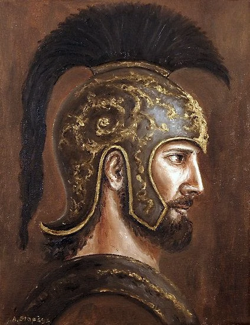
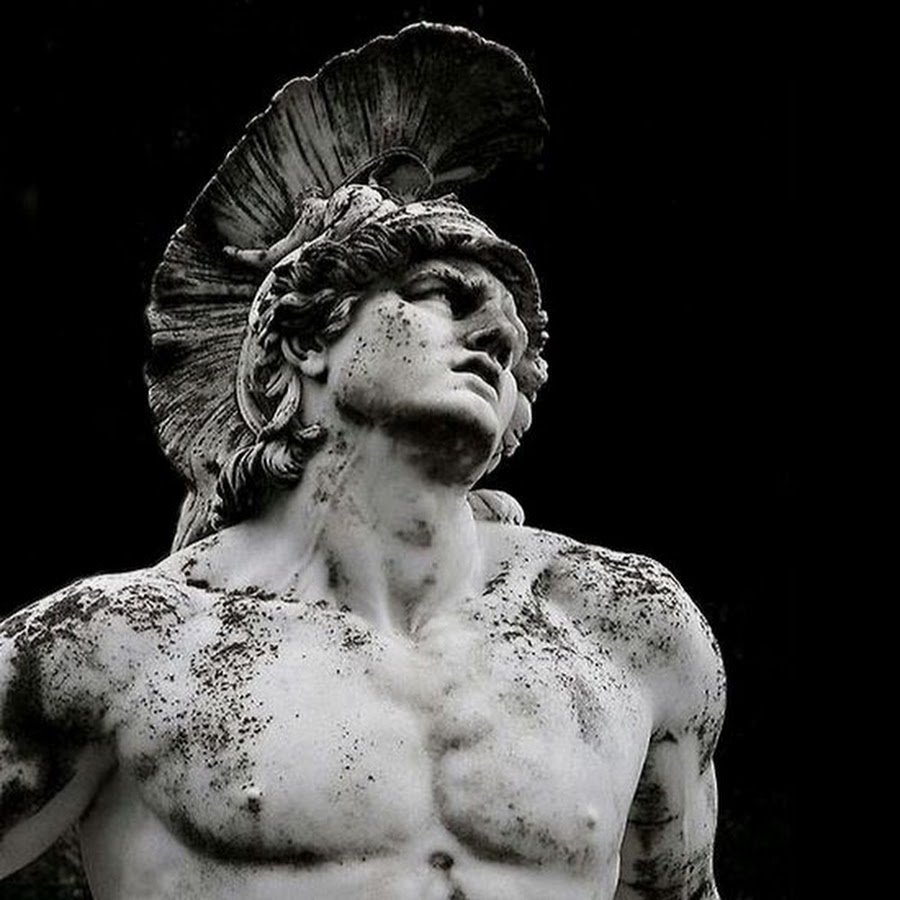
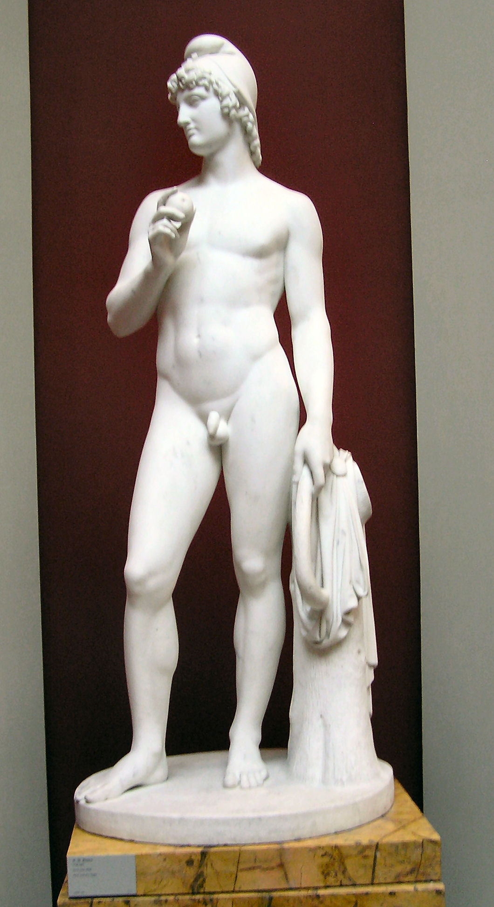
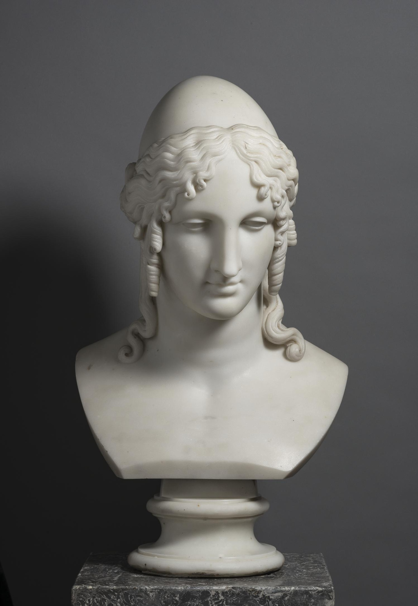
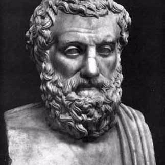

主要戰場
起因:是以爭奪世上最漂亮的美女Helen為中心，開展出以Agamamnon及Achilles為首的希臘聯合遠征軍對陣以Hector及Paris為首的特洛伊軍的十年攻城戰。起初是由三位女神分別是:Hera, Athena與Venus在爭誰才是最美麗的女神，後來他們找到Paris，請他來裁決。Hera說能讓他統領全歐洲與亞洲，Athen保證能讓他成為最偉大的戰士，而Venus承諾他將得到人間最美的女子Helen.最終Paris選擇了Venus，在去到斯巴達的時候唆使Helen離開她的丈夫Menelaus跟他一起回特洛伊。這也導致了最後被發現時Menelaus怒萬丈，其兄長Agamemnon為此發起戰爭。
結束:起初是特洛伊占上風，但由於Odysseus聰明的計策(木馬屠城)成功騙過特洛伊人，並在深夜突襲特洛伊，希臘人將特洛伊掠奪成空，贏了這場戰爭。最後Helen還是跟著Menelaus回到斯巴達，而大功臣Odysseus則是歷經多年的波折，去過眾多的地方之後，才平安回到家鄉。
重要人物

-Hector (Ἕκτωρ)
-父親:Priam 弟弟:Paris 妻子:Andromache
-勇冠三軍，愛護妻兒。
-起初反對發起戰爭，但真正開始之後還是義無反顧地率領眾人。
-誤把Patroclus當作是Achilles殺掉，最終跟Achiles決鬥被殺死。

-Achilles (Ἀχιλλεύς)
-父親:Peleus 母親:Thetis(海洋女神) 摯友(or戀人):Patroclus
-Achilles' heel-曾被母親浸入冥河River Styx中，得到刀槍不入的身體但腳踝是唯一弱點。
-本來不想參戰，但因為摯友Patroclus被殺，而激起他的戰意。
-最終被Paris一箭射中腳踝而死

Paris (Πάρις)
-母親:Hecuba 哥哥:Hector 戀人:Helen
-曾被預言會為國家帶來災禍因此遭到棄養，後因為金蘋果事件得到進城的機會。
-跟Helen的感情導致了長達十年的特洛伊戰爭

Helen(Ἑλένη)
-父親:Zeus 母親:Leda 丈夫:Menelaus
-被稱為「世上最美的女人」。
-由於Menelaus外出，於是才由Helen接待特洛伊人，也才有了後來的私奔。

-Agamemnon(Ἀγαμέμνων)
-弟弟:Menelaus 父親:Atreus 妻子:Clytemnestra
-邁錫尼的國王
-木馬一戰結束之後，選中Cassandra為妾
-戰爭結束回到家鄉後被妻子Clytemnestra與情夫Aegisthus謀害
相關影片
1.The Entire Story of the Trojan War Explained
2.Troy(2004)電影預告